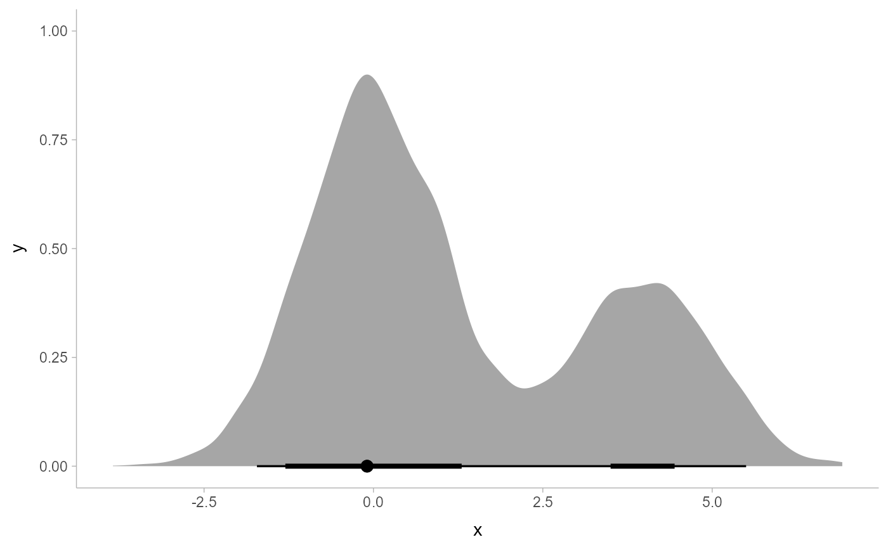

R/point_interval.R
point_interval.RdTranslates draws from distributions in a (possibly grouped) data frame into point and interval summaries (or set of point and interval summaries, if there are multiple groups in a grouped data frame).
point_interval( .data, ..., .width = 0.95, .point = median, .interval = qi, .simple_names = TRUE, na.rm = FALSE, .exclude = c(".chain", ".iteration", ".draw", ".row"), .prob ) # S3 method for default point_interval( .data, ..., .width = 0.95, .point = median, .interval = qi, .simple_names = TRUE, na.rm = FALSE, .exclude = c(".chain", ".iteration", ".draw", ".row"), .prob ) # S3 method for numeric point_interval( .data, ..., .width = 0.95, .point = median, .interval = qi, .simple_names = FALSE, na.rm = FALSE, .exclude = c(".chain", ".iteration", ".draw", ".row"), .prob ) point_intervalh(...) qi(x, .width = 0.95, .prob, na.rm = FALSE) hdi(x, .width = 0.95, .prob, na.rm = FALSE) Mode(x, na.rm = FALSE) hdci(x, .width = 0.95, na.rm = FALSE) mean_qi(.data, ..., .width = 0.95) mean_qih(...) median_qi(.data, ..., .width = 0.95) median_qih(...) mode_qi(.data, ..., .width = 0.95) mode_qih(...) mean_hdi(.data, ..., .width = 0.95) mean_hdih(...) median_hdi(.data, ..., .width = 0.95) median_hdih(...) mode_hdi(.data, ..., .width = 0.95) mode_hdih(...) mean_hdci(.data, ..., .width = 0.95) mean_hdcih(...) median_hdci(.data, ..., .width = 0.95) median_hdcih(...) mode_hdci(.data, ..., .width = 0.95) mode_hdcih(...)
| .data | Data frame (or grouped data frame as returned by |
|---|---|
| ... | Bare column names or expressions that, when evaluated in the context of
|
| .width | vector of probabilities to use that determine the widths of the resulting intervals.
If multiple probabilities are provided, multiple rows per group are generated, each with
a different probability interval (and value of the corresponding |
| .point | Point summary function, which takes a vector and returns a single
value, e.g. |
| .interval | Interval function, which takes a vector and a probability
( |
| .simple_names | When |
| na.rm | logical value indicating whether |
| .exclude | A character vector of names of columns to be excluded from summarization if no column names are specified to be summarized. Default ignores several meta-data column names used in tidybayes. |
| .prob | Deprecated. Use |
| x | vector to summarize (for interval functions: |
If .data is a data frame, then ... is a list of bare names of
columns (or expressions derived from columns) of .data, on which
the point and interval summaries are derived. Column expressions are processed
using the tidy evaluation framework (see rlang::eval_tidy()).
For a column named x, the resulting data frame will have a column
named x containing its point summary. If there is a single
column to be summarized and .simple_names is TRUE, the output will
also contain columns .lower (the lower end of the interval),
.upper (the upper end of the interval).
Otherwise, for every summarized column x, the output will contain
x.lower (the lower end of the interval) and x.upper (the upper
end of the interval). Finally, the output will have a .width column
containing the' probability for the interval on each output row.
If .data includes groups (see e.g. dplyr::group_by()),
the points and intervals are calculated within the groups.
If .data is a vector, ... is ignored and the result is a
data frame with one row per value of .width and three columns:
y (the point summary), ymin (the lower end of the interval),
ymax (the upper end of the interval), and .width, the probability
corresponding to the interval. This behavior allows point_interval
and its derived functions (like median_qi, mean_qi, mode_hdi, etc)
to be easily used to plot intervals in ggplot stats using methods like
stat_eye(), stat_halfeyeh(), or stat_summary().
The functions ending in h (e.g., point_intervalh, median_qih)
behave identically to the function without the h, except that when passed a vector,
they return a data frame with x/xmin/xmax instead of
y/ymin/ymax. This allows them to be used as values of the
fun.data = argument of stat_summaryh. Note: these
functions are not necessary if you use the point_interval
argument of stats and geoms in the tidybayes package (e.g.
stat_pointintervalh(), stat_halfeyeh(), etc), as
these automatically adjust the function output to match their required aesthetics.
median_qi, mode_hdi, etc are short forms for
point_interval(..., .point = median, .interval = qi), etc.
qi yields the quantile interval (also known as the percentile interval or
equi-tailed interval) as a 1x2 matrix.
hdi yields the highest-density interval(s) (also known as the highest posterior
density interval). Note: If the distribution is multimodal, hdi may return multiple
intervals for each probability level (these will be spread over rows). You may wish to use
hdci (below) instead if you want a single highest-density interval, with the caveat that when
the distribution is multimodal hdci is not a highest-density interval. Internally hdi uses
HDInterval::hdi() with allowSplit = TRUE (when multimodal) and with
allowSplit = FALSE (when not multimodal).
hdci yields the highest-density continuous interval. Note: If the distribution
is multimodal, this may not actually be the highest-density interval (there may be a higher-density
discontinuous interval). Internally hdci uses
HDInterval::hdi() with allowSplit = FALSE; see that function for more
information on multimodality and continuous versus discontinuous intervals.
#> y ymin ymax .width .point .interval #> 1 0.009209639 -1.941554 2.037887 0.95 median qi#> x .lower .upper .width .point .interval #> 1 0.05485238 -0.653223 0.7534504 0.50 median qi #> 2 0.05485238 -1.241260 1.3417387 0.80 median qi #> 3 0.05485238 -1.991564 1.9059114 0.95 median qi#> x x.lower x.upper y y.lower y.upper .width .point #> 1 -0.05057431 -2.012529 1.934141 1.983618 -1.946229 5.947635 0.95 median #> .interval #> 1 qidata.frame( x = rnorm(1000), group = "a" ) %>% rbind(data.frame( x = rnorm(1000, mean = 2, sd = 2), group = "b") ) %>% group_by(group) %>% median_qi(.width = c(.50, .80, .95))#> # A tibble: 6 x 7 #> group x .lower .upper .width .point .interval #> <fct> <dbl> <dbl> <dbl> <dbl> <chr> <chr> #> 1 a -0.0328 -0.707 0.636 0.5 median qi #> 2 b 2.06 0.759 3.44 0.5 median qi #> 3 a -0.0328 -1.27 1.23 0.8 median qi #> 4 b 2.06 -0.559 4.48 0.8 median qi #> 5 a -0.0328 -2.00 1.84 0.95 median qi #> 6 b 2.06 -1.75 5.91 0.95 median qimultimodal_draws = data.frame( x = c(rnorm(5000, 0, 1), rnorm(2500, 4, 1)) ) multimodal_draws %>% mode_hdi(.width = c(.66, .95))#> x .lower .upper .width .point .interval #> 1 -0.06628626 -1.338450 1.358015 0.66 mode hdi #> 2 -0.06628626 3.485694 4.496869 0.66 mode hdi #> 3 -0.06628626 -1.719262 5.500183 0.95 mode hdimultimodal_draws %>% ggplot(aes(x = x, y = 0)) + stat_halfeyeh(point_interval = mode_hdi, .width = c(.66, .95))